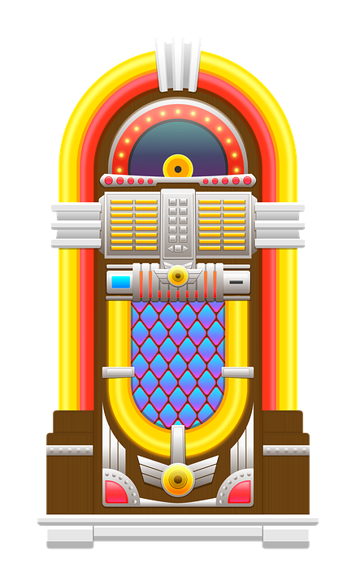
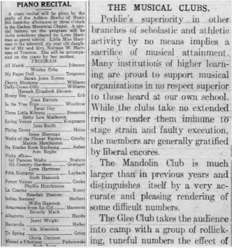

Musical Masterpieces of the Early 1900's in America
Scroll Down!
Musical Masterpieces of the Early 1900s in America
Between 1914 to 1945, social, political, and technological changes within America’s cultural environment influenced popular music, which is reflected in Hightstown’s history
By Mathew Seng

Song: Tiger Rag
- During WWI, Dixieland jazz was on the rise
- Songs such as Tiger Rag by the Original Dixieland Jass Band were popular
- The original recording under Aeolian-Vocalion Records in 1917 did not sell well due to the fact that they were recorded in a vertical format which could not be played on most phonographs of that time
- In 1918, a new recording for the Victor Talking Machine Company phonographs were made and established the song as a jazz standard
- The song exploded in popularity during the late 1910s and 1920s, being recorded by hundreds of bands and appearing on soundtracks to movies and cartoons when energetic music was needed
- "Tiger Rag" had over 136 versions by 1942 being recorded by artists such as Art Tatum, Benny Goodman, Frank Sinatra (in a version with lyrics), Duke Ellington, Bix Beiderbecke, and Louis Armstrong
- Notable recordings of the song include the 1931 million-selling version by the Mills Brothers, a 1952 version by Les Paul and Mary Ford, and a 1954 bebop version by Charlie Parker
- During the early 1930s it became a standard showoff piece for big band arrangers and soloists
- The song declined in popularity during the Swing era in the late 1930s due to becoming too cliche
WWI Music
- In the 1890s to the late 1910s, ragtime was one of the most dominant forms of music
- After WWI, jazz replaced ragtime as the dominant style of popular music
- WWI inspired various songs, causing ragtime to be replaced with war songs as the most prevalent form of popular music
- Their moods range from jubilant (“Over There”) to hesitant (“Don’t Send My Darling Boy Away”) to anti-German (“Bing! Bang! Bing ‘Em on the Rhine”)
- Other songs depict the everyday lives of soldiers, such as Irving Berlin’s “Oh How I Hate Getting Up In the Morning” and “I Don’t Want to Get Well,” a duet by Arthur Fields and Grace Woods
- Love is another common theme in songs such as “If He Can Fight Like He Can Love, Goodnight Germany,” where female performers sing to their sweethearts overseas
- Some songs give a voice to women’s wartime roles overseas such as in “Oh Frenchy,” a tune about an American nurse serving in Paris falling in love with her patient
War songs came from many points of view and reflected a unique mixture of sentiments
Dance
- Before WWI, ragtime dances were popular on dance floors
- Popular dances within the ragtime movement include the Fox-Trot, the Tango, and the One-Step
- During WWI, as people left to fight in the war, dance floors were left deserted
- After WWI, ragtime was seen as old-fashioned, a relic from a distant and innocent pre-war past
- There was a resurgence of new dances in the Jazz Age such as the Charleston
Song: The Charleston
- The Charleston was a jazz composition composed in 1923, with lyrics by Cecil Mack and music by James P. Johnson
- The song was featured in the American black Broadway musical comedy show Runnin' Wild in 1923 and 1924
- It is one of the first and most popular uses of the stride piano technique as well as the dotted quarter note - dotted quarter note - quarter note clave which is now iconic to the song
- The rhythm was inspired by dockworkers in the harbor city of Charleston, South Carolina
- It was accompanied by the Charleston dance
- The Charleston reached peak popularity in 1926 and 1927
Roaring 20's Music
- The Roaring 20’s were defined by economic prosperity and the rise in popular jazz music
- Bands such as the Benny Goodman Big Band, Original Dixieland Jazz Band, Louis Armstrong and His Hot Five, Duke Ellington and His Orchestra, and the New Orleans Rhythm Kings were extremely popular
- Racial integration during this time also improved, especially within these bands
Song: Over The Rainbow
- The song is a ballad composed by Harold Arlen with lyrics by Yip Harburg written for the movie “The Wizard of Oz” and was sung by actress Judy Garland in 1939
- It won the Academy Award for Best Original Song and became Garland's signature song
- Notable covers of this song include versions by Israel Kamakawiwoʻole, Eva Cassidy, Danielle Hope, and Ariana Grande
- Many jazz artists have created arrangements and recordings of the song including Dave Brubeck, Ray Charles, Keith Jarrett, Stanley Jordan, Glenn Miller, Bud Powell, Boyd Raeburn, and Art Tatum
- The song was so popular during this time period because it gave hope during the worst economic downfall of America
- The melody of this song is painted above the chorus and band rooms at Hightstown High School
Great Depression Music
- One highly influential figure in the jazz world during the Great Depression was Benny Goodman, a jazz clarinetist and bandleader known as the "King of Swing"
- His concert at Carnegie Hall in New York City on January 16, 1938 is described by critic Bruce Eder as "the single most important jazz or popular music concert in history: jazz's 'coming out' party to the world of 'respectable' music."
Song: White Christmas
- White Christmas is a song reminiscing about an old-fashioned Christmas setting written by Irving Berlin in 1942
- The most famous version by Bing Crosby is the world’s best-selling single with over 50 million copies sold worldwide
- The combined total sales of all versions of the song is over 100 million copies
- When Berlin was staying up all night writing the song, he told his secretary, “Grab your pen and take down this song. I just wrote the best song I’ve ever written -- heck, I just wrote the best song that anybody’s ever written!”
- The song originally did not do well due to being overshadowed by Holiday Inn’s first hit song, “Be Careful, It’s My Heart”
- However, at the end of the 1942, it spend eleven weeks at the top of the Billboard charts, returning to the Number 1 spot in 1945 and 1946
- It returned to the annual pop chart twenty times
- The melancholy lyrics of the song such as “just like the ones I used to know,” combined with the comforting imagery of home in “where the treetops glisten,” resonated with listeners during WWII especially after the attack on Pearl Harbor, flooding the Armed Forces Network with requests for the song
- It’s one of the most memorable uses of the newly invented and refined microphone due to its intimate vocals and whistling by Bing Crosby
- The song is featured in the popular 1954 film “White Christmas,” the second highest grossing film of the year
Social Changes Influencing Music
- During the early 1900s, African Americans and women rose to power and were prominent players in genres such as jazz
Women
- WWI gave women the unprecedented opportunity to prove they could do what was then seen as men’s work
- During the Great Depression, Ann Ronell composed the music and lyrics for her hit song, “Willow Weep for Me” in 1932, which is now a jazz standard
- Dorothy Fields was another prominent lyricist, writing the lyrics to over 400 songs
- She worked with Duke Ellington, Jerome Kern, and Jimmy McHugh, winning the 1936 Oscar for Best Song for "The Way You Look Tonight"
- Billie Holiday was a famous jazz singer, but also co-wrote songs such as "God Bless the Child" and "Don't Explain" with Arthur Herzog, Jr.
- Staring from the 40s, Ella Fitzgerald, also known as the Queen of Jazz, became a jazz icon, standing out from the crowd with her purity of tone and scat singing
African Americans
- The Jazz Age featured an explosion in popular African American artists
- They faced discrimination from their white counterparts
- Many roots of jazz came from African tradition which can be heard in the rhythms and blues inflections
- As racial integration improved, black and white jazz musicians often played together, which further pushed the social boundaries of what was normal
- Influential black musicians of the time period include Louis Armstrong, Jelly Roll Morton, Ma Rainey, Josephine Baker, Lead Belly, Nat King Cole, Charlie Parker, Billie Holiday, Ella Fitzgerald, Ray Charles, John Lee Hooker, Art Blakey, Miles Davis, John Coltrane, Thelonious Monk, and Charles Mingus
Political Changes Influencing Music
- War has always been an influencer of popular music due to its ability to completely alter the atmosphere of a nation
Danny Boy
- In 1913, Frederic Weatherly wrote the lyrics and set the song to the tune of “Londonderry Air,” a tune that originales from Northern Ireland
- The song’s meaning is a message from a parent to a son going off to a war and is considered to be an unofficial signature song and anthem of Irish Americans and Irish Canadians
- American-German opera singer Ernestine Schumann-Heink produced the first recording of "Danny Boy" in 1915 and it was popularized by English opera singer Elsie Griffin during WWI
- The song has been recorded by many artists such as Glenn Miller and His Orchestra in 1940 during WWII
Other Works
- Edward Elgar wrote his Carillon for voice and orchestra in support of Belgian resistance in December 1914 and this was soon followed by Polonia, composed for a Polish Victims’ Relief Fund Concert in the Queen’s Hall in London
- Many composers were killed during WWI and left behind their works for other composers to finish
- Scottish composer Cecil Coles was still writing music while he served on the Western Front and sent manuscripts of works such as his orchestral suite Behind the Lines back to his friend Gustav Holst before being killed
- Works such as Elgar’s Cello Concerto, Vaughan Williams’s Pastoral Symphony, Holst’s The Planets, Bliss’s early Piano Quartet, Gurney’s War Elegy, and Bridge’s Oration were all composed in response to the tragedy of WWI
Technological Changes Influencing Music
- The three most significant inventions that influenced popular music were the radio, the microphone, and the jukebox.
Radio
- The radio’s greatest influence on music was that it allowed people to listen to what was popular at the time, creating a cultural and social bond between all people that enjoyed listening to the radio
- In 1893, Nikola Tesla invented and demonstrated a wireless radio in St. Louis, Missouri
- Before and during WWI, radio was mainly used by the military to communicate such as contacting ships that were out at sea using Morse code
- Between 1923 and 1930, 60 percent of American families purchased radios
- In 1922 there were 600 radio stations in the United States
- Chicago's first radio station, KYW, begun in 1921 by Westinghouse Electric and Manufacturing Company and exclusively broadcasted opera six days a week
- In the late 1920s, radio broadcasters expanded their repertoire to include popular music, classical music, sporting events, lectures, fictional stories, newscasts, weather reports, market updates, and political commentary
- During WWII, the "Top-40" in music became popular and the target audience went from just families gathering around a radio to pre-teens up to adults in their mid-thirties
Microphone
- Emile Berliner and Thomas Edison invented the carbon microphone in 1877
- Thomas Edison’s carbon-button transmitter of 1886 was employed at the first ever radio broadcast, a performance at the New York Metropolitan Opera House in 1910
- Adopted by most major music production studios in 1925
- Allowed for higher quality audio and changed the way that singers sing
- Before the invention of the microphone, in order to be heard, singers had to stand in front of the one big recording device that the entire band was also using
- After the handheld microphone was invented, singers could use more nuanced techniques in their singing rather than requiring big gestures in order to be noticed
Jukebox
- In 1877, Thomas Edison invented the phonograph, a coin-operated music machine that played music from a wax cylinder
- - In 1889, Louis Glass installed a coin-operated phonograph in his Palais Royale Saloon that accepted nickels, coining the term, “nickelodeon”
- In 1906, John Gabel invented the "Automatic Entertainer," a music machine that replaced the wax cylinder with 78-rpm disc recordings and dominated the market until the mid-1920s
- With the invention of the electric amplifier in 1927, it allowed jukeboxes to be heard by large groups of people, increasing their popularity
- Illegal speakeasies during Prohibition used jukeboxes as cheap and easy forms of entertainment
- During the Great Depression, jukebox sales plummeted, but then resurfaced near in 1938
- Seeburg, Rock-Ola, and Wurlitzer were the most popular jukebox brands during the 1940s
- By playing popular songs, it made those songs even more well-known
Music in Hightstown
- The people of Hightstown enjoyed various forms of entertainment because of the connecting railroad that went through the town
Hightstown Country Club on Monmouth Street
- Ballroom dancing on Saturday nights
- People came from all over during the 40s to 60s
- Rock bands and big bands played such as Benny Goodman’s big band
- Bands that travelled between New York and Philly often performed gigs in Hightstown when travelling
Hightstown Opera House on Stockton Street
- Although it was named the Opera House, opera was only performed some of the time
- Most people that performed were entertainers in the form of theatre or speakers
- Famous speaks that have spoken here include P. T. Barnum, Horace Greeley, and Billy Sunday
Music Programs
- Hightstown valued music education very highly
- Piano recitals were held in churches where classical music was played by young aspiring musicians
- The Peddie School was proud of their musical clubs including the Mandolin Club and the Glee Club

Minstrel Shows
- Minstrel shows consisted of comic skits, variety acts, dancing, and music performances that depicted people specifically of African descent
- They used blackface, a very racist depiction of blacks by modern standards, but acceptable at the time
- They lampooned black people as dim-witted, lazy, buffoonish, superstitious, and happy-go-lucky
- The Guy Bros. were a famous group in Hightstown that often performed at the Hightstown Opera House


Social Changes Influencing Music
- During the early 1900s, African Americans and women rose to power and were prominent players in genres such as jazz
Women
- WWI gave women the unprecedented opportunity to prove they could do what was then seen as men’s work
- During the Great Depression, Ann Ronell composed the music and lyrics for her hit song, “Willow Weep for Me” in 1932, which is now a jazz standard
- Dorothy Fields was another prominent lyricist, writing the lyrics to over 400 songs
- She worked with Duke Ellington, Jerome Kern, and Jimmy McHugh, winning the 1936 Oscar for Best Song for "The Way You Look Tonight"
- Billie Holiday was a famous jazz singer, but also co-wrote songs such as "God Bless the Child" and "Don't Explain" with Arthur Herzog, Jr.
- Staring from the 40s, Ella Fitzgerald, also known as the Queen of Jazz, became a jazz icon, standing out from the crowd with her purity of tone and scat singing
African Americans
- The Jazz Age featured an explosion in popular African American artists
- They faced discrimination from their white counterparts
- Many roots of jazz came from African tradition which can be heard in the rhythms and blues inflections
- As racial integration improved, black and white jazz musicians often played together, which further pushed the social boundaries of what was normal
- Influential black musicians of the time period include Louis Armstrong, Jelly Roll Morton, Ma Rainey, Josephine Baker, Lead Belly, Nat King Cole, Charlie Parker, Billie Holiday, Ella Fitzgerald, Ray Charles, John Lee Hooker, Art Blakey, Miles Davis, John Coltrane, Thelonious Monk, and Charles Mingus